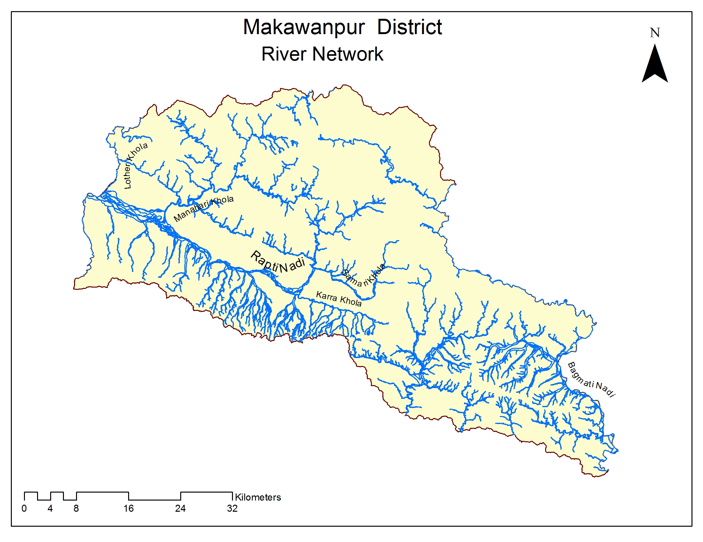

Water Bodies

Major Rivers and Lakes(मुख्य-मुख्य नदी र तालहरु)
Rapti River that originates from the central part of the district, Bagmati at the East, Bakaiya River that flows from Eastern center to South are three major rivers of this district. Lacking the permanent source of water, though enough amount of water flows in Monsoon as Flood, very less amount of water flows during winter in this rivers. Details of some major branches of these rivers are as follows:
| Rapti River | Bagmati River | Bakaiya River | Jyamire River | Kulekhani River | Harda River |
| Karra River | Ipa River | Hiramani River | Samari River | Chhaura River | Bakaiya River |
| Rapti River | Namkana River | Lwahjor River | Manahari River | Jokhaniyam River | Majhi River |
| Bhaiga River | Meteni River | Simat River |